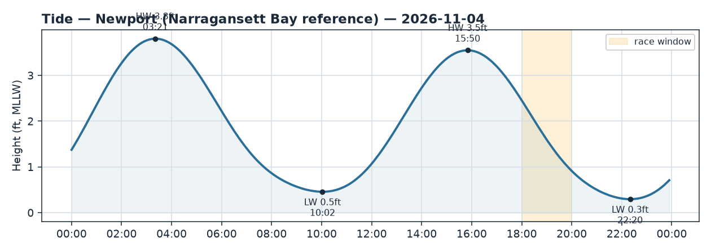
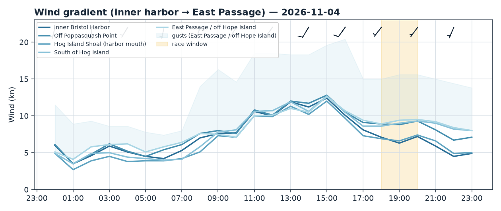
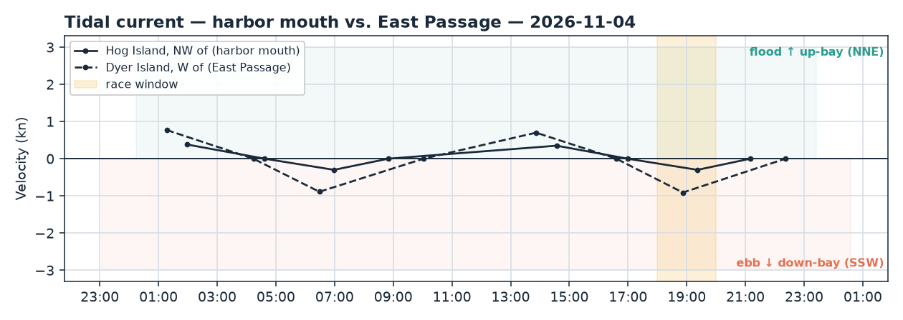

Bristol Harbor · Rhode Island
Wed 04 Nov 2026 · 18:00–20:00
Steady SW 8–10 kt (likely stronger — obs beat the model) with a building ebb setting SSW/seaward on a falling tide.
Wind
Classic SW across the whole course footprint, 215–225°, dead steady in direction — only a hair of backing (2–3°) over the window, so treat it as a persistent-direction night, not an oscillating one. Forecast fix average runs 7 kt inside the harbor to 9–9.3 kt seaward (Hog south, East Passage), gusts to ~16 kt. Models are tightly packed (spread 0.7–1.4 kt), so strength confidence is normally high — except the live obs say add to it. wind_check has observations running 1.31× the model (8.8 vs 6.7 kt), and the anemometers back it: Newport at the Passage mouth is 10.7 kt avg (peak 11.9) from ~210°, and Conimicut up-bay is honking 16.3 kt avg, gusting 19.6 from ~187°. NWS zone echoes it: SW 10–15 kt, gusts to 20. Lean toward the obs regime — plan for a solid 10–14 kt, not single digits.
The fix gradient tells the pressure story: the inner harbor and harbor mouth (Hog Island Shoal) are the light spots (~7 kt), while off Poppasquash Point and anything seaward of Hog Island is 2+ kt more breeze. More pressure the farther S/seaward you work, and watch for the usual soft patch to the E/SE of Poppasquash Neck when a lane tucks under that shore.
Current
Ebb is building throughout the window and never slacks before the finish. At the harbor mouth (Hog Island NW) it turned to ebb after the 16:59 slack and runs a modest ~0.3 kt setting SSW (~199°, seaward), peaking around 19:22. In the East Passage (Dyer Island) the ebb is the real force — it turned at 16:36 and is cranking toward its 18:52 max of ~0.9 kt, setting SSW (~216°) right through the window; next slack isn't until 22:22. So seaward legs run against a meaningful down-bay push, while the inner harbor stays near-slack and tactically quiet.
Tide
High water was 15:50 (3.55 ft); the tide is falling toward the 22:20 low (0.29 ft) the entire window — you're racing through mid-ebb on a dropping stage. Nothing dramatic at 18:00–20:00, but water is coming off the shallow marks and harbor edges steadily, so mind depth near any shoal-side marks and the committee-boat anchorage, and note it's a dark, falling-tide finish.
Tactical call
Course-agnostic: The levers point the same way — pressure lives to the S/seaward (Poppasquash Point, Hog Island south, East Passage), and the ebb sets SSW down the Passage. With the breeze from the SW and the ebb running SSW, the two are roughly aligned on the channel axis. On any beat, the extra breeze off Poppasquash Point and seaward of Hog is worth chasing — but temper it against the current: when a leg points you up-bay (N, toward/into the harbor), you're punching the ebb, so hunt the shallower shore edges where the SSW set is weakest and stay out of the mid-channel conveyor; when a leg takes you seaward (S), ride the channel ebb for the free push. The inner harbor is light and near-slack — don't expect either pressure or current to pay in there.
If the course is set: - N–S windward/leeward: The E–W pressure band (lighter harbor/mouth, more off Poppasquash & seaward) is the cross-course lever on the beat; on the run S, the channel ebb adds to VMG — take it. - J-hook out of the harbor: Start in the quiet near-slack inner harbor, then the hook into the mouth/Passage drops you straight into the building SSW ebb and more breeze — the favored edge flips seaward the moment you clear Hog Island Shoal. - Around Hog Island: Give each leg its own call — the SSW ebb helps on the seaward/southbound leg and hurts on the up-bay/northbound leg, where you'll want the shore edges off the island tips rather than the gut. - Out-and-back (light air): Not really a light-air night with obs at 10–14 kt, but if it softens, get to the seaward breeze first; the ebb is a bonus going out and a tax coming home.
Charts: briefs/2026-11-04_wind.png, briefs/2026-11-04_current.png, briefs/2026-11-04_tide.png.


